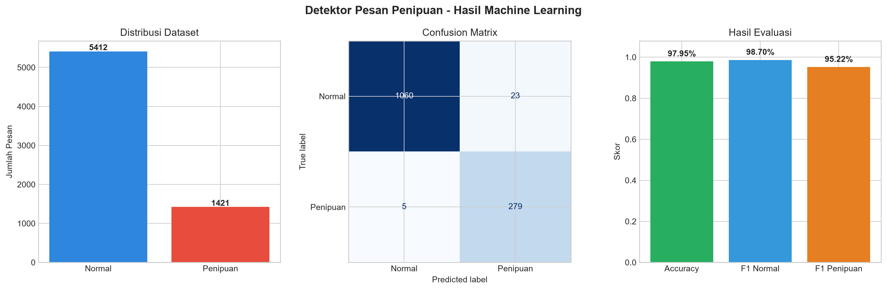

Model: TF-IDF + Logistic Regression

| Kelas | Precision | Recall | F1-score | Support |
|---|---|---|---|---|
| normal | 99.53% | 97.88% | 98.70% | 1083 |
| penipuan | 92.38% | 98.24% | 95.22% | 284 |
Model berhasil membedakan pesan normal dan penipuan pada data pengujian. Hasil ini berasal dari dataset publik.